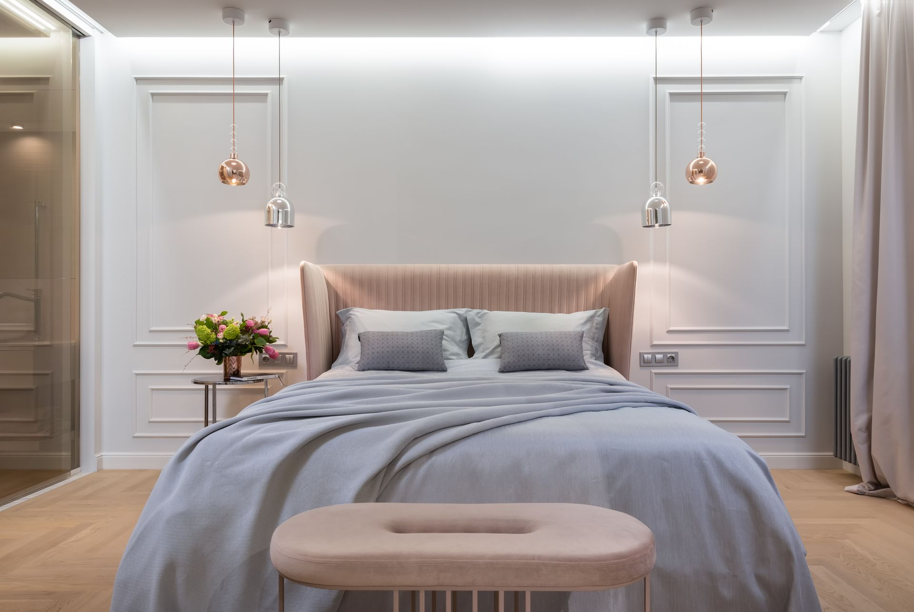

04 & 05 — Arts Sacrés
La Matière
Révélée
L'art Bamiléké n'est jamais purement décoratif. Chaque œuvre est un pont entre le monde visible et celui des ancêtres.

L'Écriture de l'Indigo
Le Ndop
Véritable carte cosmique, l'étoffe Ndop est un coton tissé et teint à l'indigo, orné de motifs géométriques blancs par une technique de réservage fastidieuse. Historiquement réservé aux dignitaires.
Chaque motif (le damier, la lune, le lézard, le gong) est un idéogramme qui raconte une histoire, un proverbe ou symbolise l'univers. Revêtir le Ndop, c'est s'envelopper de la sagesse des ancêtres et déclarer son appartenance à la noblesse.
La Maîtrise du Bois
Sculptures & Trônes
L'art Bamiléké n'est jamais purement décoratif ; il est fonctionnel, rituel et spirituel. Les sculpteurs transforment le bois en trônes majestueux soutenus par des figures de panthères, d'éléphants ou de mygales.
La panthère symbolise la puissance royale, l'éléphant la majesté écrasante, et la mygale la sagesse et la divination. Ces trônes ne sont utilisés que lors de grandes cérémonies et emmagasinent l'énergie vitale de chaque roi qui s'y assied.

Symbolique Sacrée
Le Sens
des Masques
Les masques Bamiléké ne sont pas de simples objets d'art. Ce sont des entités spirituelles qui incarnent la puissance royale, la justice invisible et la connexion avec le monde des ancêtres.

Mbap Mteng
Masque Éléphant
Incarnation de la puissance du Fon. Ses oreilles circulaires proémissives et ses panneaux de perles géométriques (triangles = symbole de la panthère) affirment l'autorité royale. Seul le roi ou les membres autorisés peuvent le porter.

Buffalon
Masque Bufflon
Présent à presque toutes les cérémonies du Grasslands. Il représente la force, le courage et la bravoure. Étroitement lié au Fon, il accompagne les danses guerrières et les funérailles royales.

Nso
Panthère
Selon la tradition orale, le Fo peut se transformer en panthère ou en éléphant à volonté. La panthère symbolise la puissance royale, la discrétion du pouvoir et la capacité de frapper sans être vu.
« Un vieillard qui meurt est une bibliothèque qui brûle. »
07 — Héritage Immatériel
La Voix et le Tam-Tam
La transmission de l'histoire et de la sagesse Bamiléké s'est effectuée pendant des siècles par la parole, les proverbes et la musique.
Les griots (hérauts de la cour) chantent les épopées, accompagnés par le balafon (xylophone en bois), les trompes, et surtout les tambours à fente géants qui servaient jadis à transmettre des messages d'une vallée à l'autre.